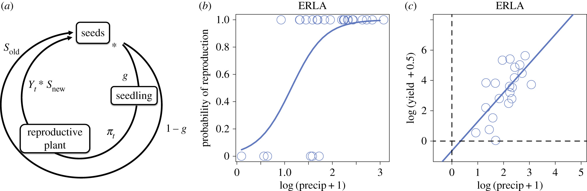

Shifting Precipitation Regimes Influence Optimal Germination Strategies and Population Dynamics in Bet-Hedging Desert Annuals.
Research
Mathematical frameworks for ecological dynamics
I study complex biological systems using mathematical and computational tools, with a focus on long-term population and community dynamics.
Overview
My work connects dynamical systems, probability, and game-theoretic ideas to analyze how species adapt and persist under changing environmental conditions. I have studied systems such as Sonoran Desert annual plants, which provide a natural setting for understanding how organisms respond to extreme environmental variability.
A central theme of my research is identifying how optimal strategies emerge in biological systems. My recent work has focused on viral life-history strategies, examining how latent periods and replication modes are shaped by environmental factors such as dilution rates in controlled systems such as chemostats.
I am also interested in how ecological and evolutionary frameworks can be used more broadly to understand competition, persistence, and strategic behavior across interacting systems.

Selected publications
Age Structured Partial Differential Equations Model for Culex Mosquito Abundance.
Predicting habitat choice after rapid environmental change.
Predicting evolutionarily stable strategies from functional responses of Sonoran Desert annuals to precipitation.
Widespread Ecological Networks and their Dynamical Signatures (WENDyS).
Awards and fellowships
- NSF MPS-Ascend Fellow, 2021–2022
- NJ-NExT Fellow, 2022
- William K. Schwarze Award, UC Davis, 2017